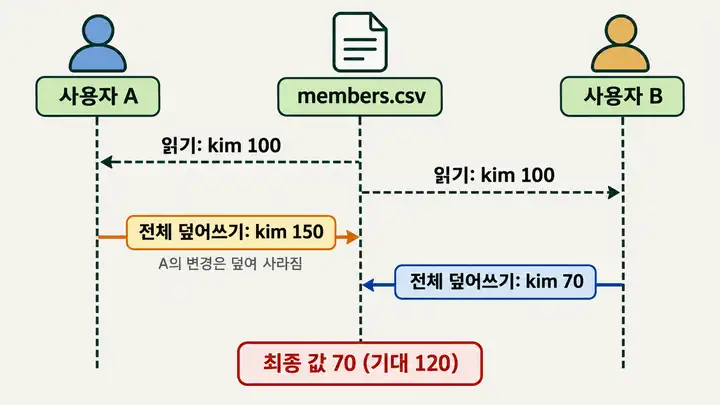
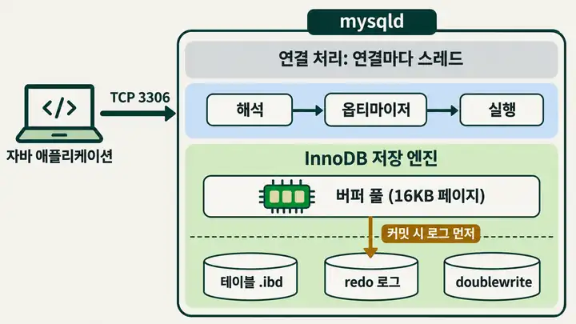
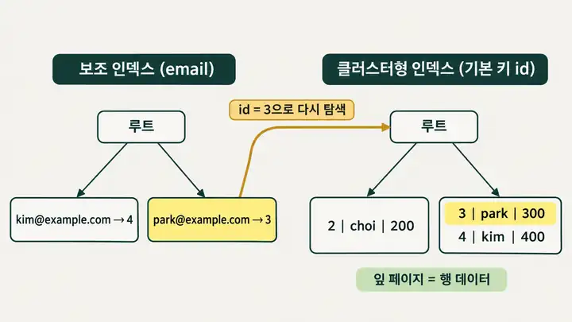

데이터베이스 입문 / 01회
데이터베이스 소개
파일에 직접 저장할 때 생기는 갱신 손실과 반쯤 쓰인 파일에서 출발해, DBMS가 페이지·버퍼 풀·redo 로그·키로 그 문제를 어떻게 막는지와 관계형 모델의 뼈대를 세운다.
오늘 끝나면 할 수 있는 것
- 데이터, 정보, 메타데이터를 구별하고, 같은 데이터에서 여러 정보를 뽑아야 한다는 사실이 왜 질의 언어와 스키마를 요구하는지 설명할 수 있다.
- 여러 프로그램이 파일을 직접 읽고 쓸 때 생기는 갱신 손실, 반쯤 쓰인 파일, 전체 훑기, 중복과 불일치, 형식 종속 문제를 실행 결과로 재현하고, 각 문제를 DBMS의 어떤 장치가 막는지 짝지을 수 있다.
- MySQL 서버가 연결 스레드, SQL 계층, 저장 엔진(InnoDB)으로 나뉘어 있고 InnoDB가 페이지, B-tree 인덱스, 버퍼 풀, redo 로그, doublewrite 버퍼로 데이터를 지킨다는 구조를 그림으로 그릴 수 있다.
- 관계형 데이터베이스와 문서형·키-값형 같은 NoSQL 저장소가 스키마, 관계 표현, 트랜잭션 범위에서 어떻게 다른지 같은 데이터를 두 방식으로 모델링해 비교할 수 있다.
- 릴레이션, 튜플, 속성, 도메인, 슈퍼 키, 후보 키, 기본 키, 외래 키를 예제 테이블에서 찾아내고, InnoDB에서 기본 키가 곧 테이블의 물리적 정렬 기준이 된다는 점을 설명할 수 있다.
핵심 강의 → 핵심 요약 → 실무 재판단 → 적용 연습 → 이해 확인
01 핵심 강의
이 강의의 차례 · 소제목 13개
이 회차의 질문: 프로그램이 꺼져도 남아야 하는 것
앞선 권들에서 만든 객체는 모두 JVM의 힙에 있었다. 회원 가입 요청을 받으면 Member 객체를 만들어 컬렉션에 넣고, 조회 요청이 오면 그 컬렉션을 뒤졌다. 이 방식은 JVM 프로세스가 살아 있는 동안에만 통한다. 프로세스가 끝나면 운영체제가 힙으로 쓰던 메모리를 회수하고, 그 안의 객체도 함께 사라진다. 서버를 재배포하거나 장비가 재부팅되면 회원 목록은 빈 상태로 다시 시작한다.
실제 서비스에서 받아 둔 주문, 결제, 회원 정보는 프로세스의 수명과 상관없이 남아 있어야 한다. 프로그램이 끝나도 데이터가 살아남는 성질을 영속성(persistence)이라 한다. 영속성을 얻으려면 데이터를 전원이 꺼져도 내용이 유지되는 저장 장치, 곧 디스크나 SSD에 기록해야 한다. 자바에서 그런 장치에 접근하는 가장 직접적인 방법은 파일이다. java.nio.file.Files를 쓰면 몇 줄로 파일을 읽고 쓸 수 있고, 실제로 많은 프로그램이 설정과 로그를 파일로 남긴다.
그런데 여러 사용자가 동시에 읽고 고치는 업무 데이터를 파일에 직접 두면 곧 곤란한 일이 생긴다. 이 회차는 그 곤란함을 자바 코드로 직접 만들어 보는 데서 시작한다. 그다음 데이터베이스 관리 시스템(DBMS, Database Management System)이 같은 문제를 어떤 장치로 막는지 MySQL InnoDB를 예로 한 층 아래까지 내려가 본다. 마지막으로 관계형 데이터베이스와 NoSQL의 차이, 대표적인 관계형 제품들, 그리고 관계형 모델의 핵심 개념인 테이블·행·열·키를 세운다.
이 권의 나머지 회차는 이 뼈대 위에서 SQL을 다룬다. 02회는 MySQL을 띄우고 SQL의 분류, 데이터 타입, 제약 조건을, 03회는 테이블을 만들고 데이터를 넣고 고치는 방법을, 04회부터 06회까지는 조회·정렬, 데이터 가공, 집계와 그룹핑을 맡는다. 그래서 이 회차에는 SQL 문법이 조금만 나온다. 대신 "왜 DBMS를 쓰는가"와 "관계형 모델은 무엇을 약속하는가"에 지면을 쓴다. 이 두 질문의 답을 알고 있으면 이후 회차의 문법 하나하나가 어떤 문제를 풀려고 생겼는지 보인다.
데이터와 정보
데이터(data)는 관찰하거나 측정한 사실을 기록한 값이다. 2026-11-16, kim, 150은 모두 데이터다. 데이터는 그 자체로는 의미가 정해지지 않는다. 150이 적립 포인트인지, 키인지, 상품 가격인지는 값만 보고는 알 수 없다. 누가 언제 무엇을 기록했는지, 단위가 무엇인지 같은 맥락이 붙어야 비로소 의미를 갖는다.
정보(information)는 데이터에 맥락을 붙이고 가공해서 어떤 판단에 쓸 수 있게 만든 것이다. "회원 kim의 현재 적립 포인트는 150점이다"는 하나의 정보다. 더 나아가 "포인트가 1,000점을 넘는 회원은 몇 명인가", "이번 달 가입자 수는 지난달과 비교해 어떤가" 같은 질문의 답도 정보다. 이런 답은 수많은 데이터를 골라내고(선택), 늘어놓고(정렬), 묶어 세는(집계) 가공을 거쳐 나온다. 이 권의 04회부터 06회까지가 바로 이 가공을 SQL로 하는 방법이다.
이 구분에서 두 가지 요구가 나온다. 첫째, 데이터만 저장해서는 부족하고 데이터의 의미도 함께 저장해야 한다. 파일에 1,kim,100이라는 줄이 있다고 하자. 세 번째 값이 포인트라는 사실은 파일 어디에도 없고, 그 파일을 읽는 프로그램의 코드 속에만 있다. 데이터에 대한 데이터, 곧 "이 값은 어느 항목이고 어떤 타입이며 어떤 범위를 허용하는가"를 메타데이터(metadata)라 한다. DBMS는 이 메타데이터를 스키마(schema)라는 형태로 데이터 곁에 두고 스스로 관리한다.
둘째, 같은 데이터에서 서로 다른 정보를 뽑아야 한다. 회원 데이터 하나로 마케팅 담당자는 가입 경로별 분포를, 정산 담당자는 미사용 포인트 합계를, 고객 상담원은 특정 회원의 최근 변경 내역을 본다. 어떤 질문이 나올지 미리 다 알 수는 없다. 질문이 바뀔 때마다 파일을 훑는 프로그램을 새로 짜야 한다면 비용이 크고 실수도 많아진다. 그래서 "무엇을 원하는지"만 적으면 시스템이 알아서 데이터를 찾아 가공해 주는 질의 언어가 필요해진다. 관계형 DBMS에서 그 언어가 SQL이다.
마지막으로, 정보의 품질은 데이터의 품질을 넘지 못한다. 같은 사실이 두 곳에 서로 다른 값으로 기록되어 있으면 어느 쪽을 읽어 계산하느냐에 따라 다른 정보가 나온다. 회원 이름이 회원 파일에는 "김철수", 주문 파일에는 옛 이름 "김철호"로 남아 있다면 주문 내역 화면과 회원 정보 화면이 서로 다른 사람처럼 보인다. 데이터베이스 설계의 상당 부분은 이런 불일치가 아예 생기지 않도록 같은 사실을 한 곳에만 기록하는 일이다.
| 구분 | 예 | 어디에 있는가 |
|---|---|---|
| 데이터 | 1, kim, 150 | 파일의 한 줄, 테이블의 한 행 |
| 메타데이터 | 세 번째 값은 정수 타입의 적립 포인트이고 음수가 될 수 없다 | 파일 방식에서는 프로그램 코드 속, DBMS에서는 스키마 |
| 정보 | 포인트가 1,000점을 넘는 회원은 모두 몇 명인가에 대한 답 | 데이터를 선택·정렬·집계한 결과 |
파일에 직접 저장해 보기
회원의 아이디, 이름, 적립 포인트를 쉼표로 구분한 텍스트 파일 members.csv에 저장한다고 하자. 회원 한 명이 한 줄이다. 아래 코드는 이 파일로 세 가지 일을 한다. 회원 한 명을 찾고, 두 사용자가 같은 회원의 포인트를 거의 동시에 고치고, 파일을 다시 쓰다가 도중에 실패한다. 실제 서버라면 두 사용자의 요청은 서로 다른 스레드에서 실행되고 끼어드는 순서는 실행할 때마다 달라진다. 여기서는 결과를 매번 같게 만들기 위해 가장 나쁜 순서를 코드에 직접 적었다.
import java.io.*;
import java.nio.file.*;
import java.util.*;
public class FileStoreDemo {
static final Path FILE = Path.of("members.csv");
// 파일 전체를 읽어 id로 회원 한 명을 찾는다: 처음부터 끝까지 훑는다
static String[] find(String id) throws IOException {
for (String line : Files.readAllLines(FILE)) {
String[] f = line.split(",");
if (f[0].equals(id)) return f;
}
return null;
}
// 파일 전체를 다시 쓴다
static void saveAll(List<String> lines) throws IOException {
Files.write(FILE, lines);
}
static List<String> updatePoint(List<String> snapshot, String id, int newPoint) {
List<String> out = new ArrayList<>();
for (String line : snapshot) {
String[] f = line.split(",");
out.add(f[0].equals(id) ? f[0] + "," + f[1] + "," + newPoint : line);
}
return out;
}
public static void main(String[] args) throws IOException {
saveAll(List.of("1,kim,100", "2,lee,200", "3,park,300"));
// 1) 갱신 손실: A와 B가 같은 파일을 각자 읽고, 각자 고친 뒤, 각자 통째로 쓴다
List<String> seenByA = Files.readAllLines(FILE); // A: kim 100
List<String> seenByB = Files.readAllLines(FILE); // B: kim 100
saveAll(updatePoint(seenByA, "1", 100 + 50)); // A: 50 적립 -> 150
saveAll(updatePoint(seenByB, "1", 100 - 30)); // B: 30 사용 -> 70
System.out.println("기대한 kim 포인트: 120, 실제: " + find("1")[2]);
// 2) 쓰다가 중간에 실패: 파일을 비운 뒤 한 줄씩 쓰다가 예외가 난다
try (BufferedWriter w = Files.newBufferedWriter(FILE)) { // 여는 순간 기존 내용은 잘려 나간다
List<String> lines = List.of("1,kim,70", "2,lee,200", "3,park,300");
for (int i = 0; i < lines.size(); i++) {
if (i == 2) throw new IOException("디스크 오류 흉내");
w.write(lines.get(i));
w.newLine();
}
} catch (IOException e) {
System.out.println("쓰기 실패: " + e.getMessage());
}
System.out.println("남은 줄 수: " + Files.readAllLines(FILE).size());
System.out.println("park 찾기: " + Arrays.toString(find("3")));
}
}기대한 kim 포인트: 120, 실제: 70
쓰기 실패: 디스크 오류 흉내
남은 줄 수: 2
park 찾기: null실행이 끝난 뒤 members.csv에는 1,kim,70과 2,lee,200 두 줄만 남는다. 짧은 코드지만 파일 방식의 약점이 세 군데에서 드러난다. 하나씩 추적해 보자.
첫 번째 문제: 갱신 손실
처음 상태에서 kim의 포인트는 100이다. 사용자 A는 50점을 적립하려 하고 사용자 B는 30점을 쓰려 한다. 두 작업이 모두 반영되면 결과는 120이어야 한다. 그런데 A와 B는 각자 파일을 통째로 읽어 자기 메모리에 사본을 만든다. 둘 다 사본에서 kim의 포인트 100을 본다. A는 자기 사본을 고쳐 150을 만들고 파일 전체를 덮어쓴다. 이어서 B도 자기 사본을 고쳐 70을 만들고 파일 전체를 덮어쓴다. B의 사본은 A가 쓰기 전에 읽은 것이므로 A의 변경을 모른다. 결과는 70이고 A의 적립 50점은 흔적 없이 사라졌다.
이 현상을 갱신 손실(lost update)이라 한다. 오류도 예외도 나지 않는다는 점이 가장 위험하다. 두 쓰기 모두 정상적으로 끝났고, 파일 형식도 멀쩡하며, 70이라는 값도 그럴듯하다. 이 버그는 두 요청이 짧은 시간 안에 겹칠 때만 나타나므로 개발자 혼자 시험할 때는 거의 재현되지 않고, 사용자가 많아진 뒤에야 "포인트가 사라졌다"는 문의로 돌아온다.
자바의 synchronized 같은 락으로 막을 수 있을까. 같은 JVM 안의 스레드끼리라면 파일 접근 전체를 하나의 락으로 감싸 순서대로 실행되게 할 수 있다. 하지만 같은 파일을 서버 인스턴스 두 대가 공유하거나, 밤마다 도는 정산 배치 프로그램이 같은 파일을 고친다면 JVM의 락은 다른 프로세스를 막지 못한다. 운영체제 수준의 파일 잠금(FileChannel.lock)도 있지만, FileLock의 Javadoc은 잠금이 다른 프로그램의 접근을 실제로 막는지는 시스템에 따라 다르며(system-dependent), 잠금이 권고(advisory)일 뿐인 시스템에서는 모든 프로그램이 같은 규약을 지켜야 한다고 적고 있다. 게다가 파일 전체를 잠그면 kim의 포인트를 고치는 동안 lee의 정보를 읽으려는 요청까지 모두 기다려야 한다.
두 번째 문제: 반쯤 쓰인 파일
Files.newBufferedWriter(FILE)는 옵션을 주지 않으면 CREATE, TRUNCATE_EXISTING, WRITE를 준 것처럼 동작한다(Files Javadoc). 즉 파일을 여는 순간 기존 내용이 모두 잘려 나가 길이가 0이 된다. 그다음 루프가 첫 줄과 둘째 줄을 버퍼에 쓰고, 셋째 줄을 쓰기 직전에 예외가 난다. try-with-resources가 close()를 호출하면서 버퍼에 있던 두 줄이 파일로 내보내진다. 그래서 파일에는 두 줄만 남고, 셋째 줄인 park는 새 버전에도 옛 버전에도 없는 상태가 되었다. find("3")이 null을 돌려준 이유다.
예외 대신 정전이나 프로세스 강제 종료였다면 상황은 더 나쁘다. 버퍼를 내보낼 기회조차 없으므로 파일이 비어 있을 수도 있고, 운영체제가 디스크에 반영한 정도에 따라 줄 중간에서 잘린 상태일 수도 있다. 우리가 원한 것은 "세 줄이 모두 새 값으로 바뀌거나, 하나도 안 바뀌거나" 둘 중 하나였다. 이렇게 여러 변경이 전부 반영되거나 전혀 반영되지 않는 성질을 원자성(atomicity)이라 한다.
파일만으로 원자성을 흉내 내는 흔한 방법은 새 내용을 임시 파일에 끝까지 쓴 뒤 원래 이름으로 바꾸는 것이다. Files.move에 ATOMIC_MOVE를 주면 이동이 원자적인 파일 시스템 연산으로 수행되고, 그렇게 할 수 없으면 AtomicMoveNotSupportedException이 난다. 다만 Javadoc은 대상 파일이 이미 있을 때 덮어쓸지 예외를 던질지는 구현에 따라 다르다고 적는다. 그리고 이 방법은 파일 하나에만 통한다. 포인트를 차감하면서 동시에 사용 내역 파일에 한 줄을 추가해야 한다면, 두 파일을 한꺼번에 원자적으로 바꾸는 방법은 운영체제가 제공하지 않는다. 회원 파일만 바뀌고 내역 파일은 그대로인 순간에 장애가 나면 둘은 영영 어긋난다.
세 번째 문제: 찾을 때마다 처음부터
find는 회원 한 명을 찾기 위해 Files.readAllLines로 파일 전체를 메모리에 올리고 처음부터 비교한다. 회원이 세 명일 때는 문제가 없지만, 읽어야 하는 양은 회원 수에 비례해 늘어난다. 원하는 회원이 맨 끝에 있다면 앞의 모든 줄을 읽고 쪼개고 비교한 뒤에야 찾는다. 회원 한 명의 포인트를 바꿀 때도 마찬가지로 파일 전체를 다시 써야 한다. 한 줄의 길이가 바뀌면 그 뒤의 모든 바이트가 밀리기 때문이다.
이를 피하려면 아이디마다 파일 안의 위치(바이트 오프셋)를 기록한 별도의 색인 파일을 두고, 줄 길이를 고정해 제자리에서 고칠 수 있게 하고, 삭제된 자리를 재활용하는 규칙을 만들어야 한다. 그러면 이번에는 데이터 파일과 색인 파일이 항상 함께 바뀌어야 한다는 새 문제가 생긴다. 앞의 원자성 문제가 그대로 돌아온다. 이렇게 하나씩 고쳐 나가다 보면 결국 고정 크기 블록, 색인 구조, 변경 로그, 잠금을 갖춘 작은 데이터베이스를 직접 만들게 된다. DBMS는 이 일을 수십 년 동안 다듬어 온 소프트웨어다.

데이터베이스 관리 시스템이 필요한 이유
앞의 실험은 문제의 일부만 보여 준다. 업무 데이터가 여러 파일에 흩어지고 그 파일을 여러 프로그램이 직접 다루기 시작하면 문제는 더 넓어진다. 회원 파일, 주문 파일, 포인트 내역 파일이 있고, 웹 서버, 정산 배치, 관리자 도구가 각자 이 파일들을 연다고 해 보자. 이 상황에서 생기는 문제를 정리하면 아래와 같다.
| 문제 | 파일을 직접 다룰 때 일어나는 일 | DBMS가 맡는 방식 |
|---|---|---|
| 중복과 불일치 | 주문 파일에도 회원 이름을 적어 두었다면, 이름이 바뀔 때 두 파일을 함께 고쳐야 한다. 하나를 빠뜨리면 두 값이 어긋난다. | 같은 사실은 한 테이블에만 두고 다른 테이블은 키로 가리킨다. 외래 키 제약이 가리키는 대상의 존재를 검사한다. |
| 접근의 어려움 | 새로운 질문이 생길 때마다 파일을 훑고 가공하는 프로그램을 새로 짜야 한다. | SQL로 원하는 결과만 적으면 DBMS가 찾는 방법을 고른다. |
| 형식 종속 | 이름과 포인트 사이에 이메일 항목을 끼워 넣으면 f[2]로 포인트를 읽던 모든 프로그램이 틀린 값을 읽는다. | 열은 위치가 아니라 이름으로 접근한다. 저장 형식은 DBMS 내부에 숨는다. |
| 무결성 규칙의 분산 | "포인트는 음수가 될 수 없다"는 규칙을 모든 프로그램이 각자 검사해야 한다. 한 프로그램이 빠뜨리면 잘못된 값이 들어간다. | 제약 조건을 스키마에 선언하면 어떤 경로로 들어온 변경이든 DBMS가 검사한다. |
| 원자성 | 여러 줄, 여러 파일에 걸친 변경 도중 장애가 나면 일부만 반영된다. | 트랜잭션으로 묶은 변경은 전부 반영되거나 전부 취소된다. |
| 동시 접근 | 갱신 손실이 생기고, 막으려고 파일 전체를 잠그면 모두가 기다린다. | 행 단위 잠금과 다중 버전으로 서로 다른 행은 동시에 처리한다. |
| 보안 | 운영체제의 파일 권한은 파일 단위다. "이름은 보여 주되 포인트는 숨긴다" 같은 세밀한 권한을 줄 수 없다. | 사용자 계정별로 데이터베이스, 테이블, 열 단위의 권한을 준다. |
| 장애 복구 | 쓰는 도중 꺼지면 무엇이 반영되었는지 알 길이 없다. | 변경을 로그에 먼저 남기고, 재시작할 때 로그로 복구한다. |
표의 오른쪽 열을 한 문장으로 줄이면 이렇다. 데이터에 접근하는 모든 프로그램이 파일을 직접 열지 않고 DBMS라는 하나의 관문을 거치게 하면, 규칙과 순서와 복구 책임을 그 관문 한 곳에 모을 수 있다. 웹 서버든 배치든 관리자 도구든 DBMS에 요청을 보낼 뿐 디스크의 바이트 배치를 알 필요가 없다. 그리고 DBMS는 모든 요청을 보기 때문에 누가 먼저인지 정하고, 규칙을 어기는 변경을 거절하고, 장애 뒤에 일관된 상태로 되돌릴 수 있다.
형식 종속 문제는 특히 오래 가는 비용이다. 파일 방식에서 "세 번째 값이 포인트"라는 지식은 그 파일을 읽는 모든 코드에 복사되어 있다. 항목 하나를 추가하려면 그 코드를 모두 찾아 고쳐야 하고, 하나라도 놓치면 프로그램은 오류 없이 틀린 값을 읽는다. 관계형 DBMS에서는 SELECT point FROM member처럼 열을 이름으로 부른다. 테이블에 email 열이 추가되어도 이 문장은 그대로 같은 값을 돌려준다. 프로그램이 데이터의 저장 구조와 분리되어 있는 정도를 데이터 독립성(data independence)이라 하는데, 이 개념은 다음 절에서 다시 다룬다.
데이터베이스 관리 시스템(DBMS) 소개
용어부터 정리한다. 데이터베이스(database)는 여러 사용자와 프로그램이 함께 쓰도록 조직해 저장한 데이터의 모음이다. 데이터베이스 관리 시스템(DBMS)은 그 데이터베이스를 정의하고, 저장하고, 조회하고, 고치고, 지키는 소프트웨어다. MySQL, PostgreSQL, Oracle Database가 DBMS 제품이다. 데이터베이스와 DBMS, 그리고 그것을 쓰는 응용 프로그램을 묶어 데이터베이스 시스템이라 부르기도 한다. 실무에서는 셋을 구분하지 않고 "DB"라고 부르는 일이 많지만, "DB를 설치한다"는 DBMS를, "DB를 백업한다"는 데이터베이스를 가리킨다는 차이는 알아 두면 좋다.
DBMS가 하는 일은 크게 세 가지로 나뉜다. 정의(definition)는 어떤 테이블에 어떤 열이 어떤 타입으로 있고 어떤 규칙을 지켜야 하는지, 곧 스키마를 만들고 바꾸는 일이다. 조작(manipulation)은 데이터를 넣고, 조회하고, 고치고, 지우는 일이다. 제어(control)는 무결성 규칙을 지키게 하고, 동시에 들어온 요청의 순서를 정하고, 사용자별 권한을 검사하고, 장애에서 복구하는 일이다. SQL의 명령도 이 분류를 따라 나뉜다. 정의는 DDL, 조작은 DML, 권한 제어는 DCL, 트랜잭션 제어는 TCL로 묶는데, 각각의 문법은 02회와 03회에서 다룬다.
선언적 질의: 무엇을 원하는지만 적는다
앞의 find 메서드는 "파일을 열고, 한 줄씩 읽고, 쉼표로 쪼개고, 첫 칸을 비교한다"는 절차를 적은 코드다. 같은 일을 SQL로 쓰면 다음과 같다.
SELECT name, point
FROM member
WHERE id = 3;이 문장에는 어떤 파일을 어떤 순서로 읽으라는 말이 없다. "member 테이블에서 id가 3인 행의 name과 point"라는 원하는 결과만 있다. 이런 언어를 선언적(declarative) 언어라 한다. 어떻게 찾을지는 DBMS의 옵티마이저(optimizer)가 정한다. id에 인덱스가 있으면 인덱스를 타고 내려가 행 하나를 바로 읽고, 없으면 테이블 전체를 훑는다. 같은 SQL이라도 데이터의 양과 인덱스 유무에 따라 실행 방법이 달라지고, 응용 프로그램은 그 변화를 몰라도 된다. MySQL 매뉴얼은 SQL이 ANSI/ISO 표준으로 정의되며 1986년부터 발전해 여러 버전이 있다고 설명한다.
데이터 독립성과 세 단계로 보는 관점
데이터베이스를 바라보는 관점을 세 단계로 나누는 방식이 있다(ANSI/SPARC 3단계 구조). 가장 바깥의 외부 단계는 각 사용자나 프로그램이 보는 모습이다. 상담원 화면에는 회원 이름과 최근 주문만, 정산 프로그램에는 포인트 합계만 필요하다. 가운데의 개념 단계는 조직 전체의 데이터를 논리적으로 정의한 것으로, 어떤 테이블과 열과 관계와 제약이 있는지를 말한다. 가장 안쪽의 내부 단계는 그 데이터가 디스크에 실제로 어떻게 놓이는지, 어떤 인덱스가 있고 어떤 페이지 크기로 저장되는지를 다룬다.
단계 사이가 분리되어 있으면 한 단계를 바꿔도 위 단계는 영향을 받지 않는다. 내부 단계를 바꿔도 개념 단계가 그대로인 성질을 물리적 데이터 독립성이라 한다. 조회가 느려서 member 테이블의 email 열에 인덱스를 추가해도, 그 열로 검색하는 SQL 문장은 한 글자도 바뀌지 않는다. 바뀌는 것은 옵티마이저가 고르는 실행 방법뿐이다. 개념 단계를 바꿔도 외부 단계가 그대로인 성질은 논리적 데이터 독립성이다. 테이블을 둘로 나누더라도, 옛 모양을 그대로 보여 주는 뷰(view)를 두면 그 뷰만 보던 프로그램은 바꾸지 않아도 된다. 파일 방식의 형식 종속 문제는 이 독립성이 전혀 없는 상태다.
DBMS는 따로 떠 있는 서버 프로세스다
MySQL은 클라이언트-서버 구조다. MySQL 매뉴얼은 MySQL을 여러 백엔드를 지원하는 다중 스레드 SQL 서버와 여러 클라이언트 프로그램·라이브러리로 이루어진 클라이언트/서버 시스템이라고 소개한다. 서버 프로그램 mysqld가 한 프로세스로 떠 있고, 응용 프로그램은 네트워크를 통해 그 프로세스에 요청을 보낸다. MySQL 포트 참조 문서에 따르면 기존 MySQL 프로토콜의 기본 포트는 TCP 3306이고, MySQL Shell 같은 클라이언트가 쓰는 X 프로토콜의 기본 포트는 33060이다. HTTP 기본 지식 권에서 본 TCP 연결과 소켓 쌍이 여기서도 그대로 쓰인다. 자바 애플리케이션이 DB에 붙는다는 것은 3306번 포트로 TCP 연결을 맺고 그 위에서 MySQL 프로토콜 메시지를 주고받는다는 뜻이다.
서버 안에서는 연결마다 스레드가 붙는다. MySQL 8.0 매뉴얼에 따르면 TCP/IP 연결 요청은 매니저 스레드 하나가 받고, 매니저 스레드는 각 클라이언트 연결에 전용 스레드를 하나씩 연결해 인증과 요청 처리를 맡긴다. 그래서 이 모델에서는 연결된 클라이언트 수만큼 스레드가 있고, 매뉴얼도 연결이 아주 많아지면 불리한 점이 있다고 적는다. 연결이 끝나면 스레드는 스레드 캐시가 가득 차지 않은 한 캐시로 돌아가 다음 연결에 재사용된다. 캐시 크기는 thread_cache_size가 정하며, 기본값은 서버가 시작할 때 자동으로 정한다.
스프링 MVC 권에서 본 서블릿 컨테이너는 요청마다 스레드 풀의 스레드 하나를 배정했다. DB 서버도 연결마다 스레드를 둔다. 그래서 웹 요청 하나가 DB를 쓰면 두 프로세스의 스레드 두 개가 TCP 연결 하나를 사이에 두고 함께 일한다. 연결을 맺으려면 TCP 핸드셰이크와 MySQL 인증을 거쳐야 하므로 요청마다 새 연결을 맺는 것은 비싸다. 이후 권에서 다룰 커넥션 풀은 이 비용을 줄이려고 미리 맺어 둔 연결을 재사용하는 장치다.
한 층 아래: MySQL 서버 안의 SQL 계층과 저장 엔진
MySQL 서버의 내부는 크게 두 층으로 나뉜다. MySQL 매뉴얼은 이 구조를 플러그형 저장 엔진 아키텍처(pluggable storage engine architecture)라 부른다. 위층은 모든 저장 엔진에 공통으로 쓰이는 관리·지원 서비스를 제공하고, 응용 프로그램과 DBA는 이 위층을 통해서만 데이터베이스와 상호작용한다. SQL 문장을 해석하고, 권한을 확인하고, 옵티마이저가 실행 계획을 세우는 일이 이 층에서 일어난다. 아래층의 저장 엔진(storage engine)은 매뉴얼의 표현대로 물리적인 수준에서 데이터에 실제로 작업을 수행하는 구성 요소다. 두 층 사이에는 정해진 인터페이스가 있어서, 저장 엔진을 바꾸어도 응용 프로그램은 크게 바뀌지 않는다.
MySQL 8.0 매뉴얼은 InnoDB가 기본 저장 엔진이며, 기본값을 따로 바꾸지 않았다면 ENGINE 절 없이 실행한 CREATE TABLE은 InnoDB 테이블을 만든다고 적는다. 같은 문서가 꼽는 InnoDB의 특징은 커밋·롤백·장애 복구 기능을 갖춘 ACID 트랜잭션, 행 단위 잠금과 일관된 읽기, 기본 키를 기준으로 데이터를 배치하는 클러스터형 인덱스, 그리고 외래 키 제약이다. 앞 절의 표에서 "DBMS가 맡는 방식"이라고 적은 내용 대부분이 실제로는 이 저장 엔진 안에서 구현된다. 이 권의 나머지 회차와 이후 권들도 InnoDB를 기준으로 한다.
응용 프로그램 (자바 애플리케이션 + JDBC 드라이버)
│ TCP 3306, MySQL 프로토콜
┌─────────▼──────────────────────────────────────────────┐
│ mysqld (프로세스 하나) │
│ │
│ 연결 처리 매니저 스레드 ──▶ 연결마다 전용 스레드 │
│ │
│ SQL 계층 해석 ─▶ 권한 확인 ─▶ 옵티마이저 ─▶ 실행 │
│ ─────────────────── 저장 엔진 인터페이스 ─────────────── │
│ InnoDB │
│ 메모리 버퍼 풀 (16KB 페이지들), 로그 버퍼 │
│ 디스크 테이블별 .ibd 파일, redo 로그, │
│ doublewrite 파일, 데이터 사전(mysql.ibd) │
└─────────────────────────────────────────────────────────┘
페이지: 디스크와 메모리 사이를 오가는 단위
InnoDB는 데이터를 행 하나씩이 아니라 페이지(page)라는 고정 크기 블록 단위로 다룬다. MySQL 8.0 매뉴얼에 따르면 페이지 크기는 innodb_page_size로 정하며 허용 값은 64KB, 32KB, 16KB, 8KB, 4KB이고 기본값은 16KB다. 이 값은 데이터 디렉터리를 처음 초기화할 때만 정할 수 있고 그 뒤로는 바꿀 수 없다. 한 인스턴스의 모든 테이블스페이스가 같은 페이지 크기를 쓴다.
왜 블록 단위인가. 디스크와 SSD는 바이트 하나가 아니라 일정 크기의 블록 단위로 읽고 쓰며, 저장 장치에 한 번 다녀오는 비용은 메모리 접근보다 훨씬 크다. 그래서 관련된 행 여러 개를 한 페이지에 모아 두면 한 번의 I/O로 여러 행을 가져올 수 있다. 100바이트짜리 행 하나를 읽고 싶어도 InnoDB는 그 행이 든 16KB 페이지 전체를 메모리로 가져오고, 같은 페이지의 다른 행이 곧이어 필요하면 다시 디스크에 가지 않는다. 페이지는 캐시의 단위이고, 변경 기록과 복구의 단위이기도 하다. 파일 방식에서 회원 한 명을 고치려고 파일 전체를 다시 쓰던 것과 비교하면, InnoDB는 그 회원이 든 페이지만 바꾸면 된다.
B-tree 인덱스: 전체를 훑지 않고 내려가 찾는다
매뉴얼은 공간(spatial) 인덱스를 제외한 InnoDB 인덱스가 B-tree 자료 구조이며, 인덱스 레코드는 B-tree의 잎(leaf) 페이지에 저장된다고 설명한다. 공간 인덱스는 다차원 데이터를 위한 R-tree를 쓴다. 데이터베이스 교재에서는 레코드를 잎 페이지에 두고 위쪽 페이지에는 길 안내용 키만 두는 이런 형태를 B+tree라는 이름으로 구분해 부르기도 한다.
B-tree의 위쪽 페이지에는 "이 범위의 키는 저 자식 페이지로 가라"는 안내만 있다. 아이디가 250인 행을 찾는다면 루트 페이지에서 250이 속한 범위의 자식 페이지 번호를 얻고, 그 페이지에서 다시 다음 페이지 번호를 얻는 식으로 잎까지 내려간다. 읽는 페이지 수는 트리의 높이와 같다. 계산을 위해 내부 페이지 하나가 자식 500개를 가리킨다고 가정해 보자. 높이가 3이면 잎 페이지는 500 × 500 = 250,000개가 되고, 그 가운데 어느 행이든 페이지 세 개만 읽으면 찾는다. 이 수치는 가정에서 나온 계산일 뿐이고 실제 분기 수는 키의 크기와 페이지 크기에 달려 있다. 중요한 것은 읽는 양이 전체 행 수에 비례하지 않고 높이에 비례한다는 구조적 차이다. 앞의 find가 행 수에 비례해 느려지던 것과 대조된다.
아이디 250을 찾는 경로 (기본 키 B-tree)
[ 루트 페이지 ]
키 ~ 200 │ 키 201 ~ 400 │ 키 401 ~
┌───────┘
▼
[ 내부 페이지 ]
키 201 ~ 240 │ 키 241 ~ 280 │ 키 281 ~ 400
│
▼
[ 잎 페이지 ]
id 241 | id 242 | ... | id 250 (행 전체) | ... | id 280
읽은 페이지: 3개. 파일 방식: 앞의 모든 줄을 읽어야 한다.
버퍼 풀: 자주 쓰는 페이지를 메모리에 붙잡아 둔다
버퍼 풀(buffer pool)은 InnoDB가 테이블과 인덱스 데이터를 접근하는 대로 캐시해 두는 주 메모리 영역이다. 매뉴얼은 자주 쓰는 데이터를 메모리에서 바로 읽게 해 처리 속도를 높인다고 설명하고, 전용 서버에서는 물리 메모리의 80%까지를 버퍼 풀에 배정하는 경우가 많다고 적는다. 크기를 정하는 innodb_buffer_pool_size의 기본값은 134217728바이트, 곧 128MB다. 기본값이 이렇게 작으므로 운영 서버에서는 보통 명시적으로 늘려 잡는다.
메모리는 디스크보다 작으므로 언젠가는 어떤 페이지를 내보내야 한다. 매뉴얼에 따르면 버퍼 풀은 LRU(least recently used) 알고리즘의 변형으로 관리된다. 새 페이지를 넣을 자리가 필요하면 가장 오래 쓰이지 않은 페이지를 내보내고, 새 페이지는 리스트의 맨 앞이 아니라 중간 지점에 넣는다. 리스트의 앞쪽은 최근에 접근된 새(young) 페이지 구간이고 뒤쪽은 덜 최근에 접근된 오래된(old) 페이지 구간이며, 기본 설정에서는 버퍼 풀의 3/8이 오래된 구간이다. 새로 읽은 페이지가 중간에 들어가므로, 한 번 읽히고 다시 쓰이지 않는 페이지는 앞쪽 구간의 자주 쓰는 페이지를 밀어내기 전에 꼬리 쪽에서 먼저 쫓겨난다.
이 구조 덕분에 DBMS는 "디스크에 저장하지만 대부분 메모리에서 읽는" 시스템이 된다. 앞의 B-tree 예에서 루트와 내부 페이지는 거의 모든 조회가 거쳐 가므로 버퍼 풀에 머물 가능성이 높고, 실제로 디스크에 가는 것은 잎 페이지 정도로 줄어든다. 반대로 버퍼 풀보다 훨씬 큰 테이블을 처음부터 끝까지 훑는 질의는 대부분의 페이지를 디스크에서 읽어야 한다. DB 서버에 메모리를 넉넉히 주는 이유, 인덱스가 없는 조회가 데이터가 늘수록 급격히 느려지는 이유가 모두 여기서 나온다.
redo 로그: 커밋은 데이터 파일이 아니라 로그에 먼저 남긴다
버퍼 풀의 페이지를 고치면 메모리의 페이지와 디스크의 페이지가 달라진다. 이런 페이지를 더티(dirty) 페이지라 한다. 커밋할 때마다 고친 페이지를 데이터 파일의 제자리에 모두 써 넣으면 안전하지만 느리다. 페이지들이 디스크 여기저기에 흩어져 있고, 행 하나를 고쳐도 16KB 페이지 전체를 써야 하기 때문이다. 그렇다고 메모리에만 두면 전원이 꺼지는 순간 커밋한 변경이 사라진다.
InnoDB는 이 사이에 redo 로그를 둔다. 매뉴얼은 redo 로그를 불완전한 트랜잭션이 쓴 데이터를 바로잡기 위해 장애 복구 중에 쓰는 디스크 기반 자료 구조라고 정의한다. 평상시에는 SQL 문장이 일으킨 테이블 데이터 변경 요청을 기록하고, 이 기록은 변경이 일어날 때마다 로그 끝에 덧붙여지며, 그 진행은 계속 커지는 LSN(log sequence number) 값으로 표시된다. 예상치 못한 종료로 데이터 파일 갱신을 마치지 못한 변경은 다음 시작 때 연결을 받기 전에 자동으로 재실행된다. 데이터 파일에 반영하기 전에 변경 내용을 로그에 먼저 남기는 이런 방식을 일반적으로 로그 선행 기록(write-ahead logging)이라 부른다.
로그를 쓰는 쪽이 빠른 이유는 쓰는 위치에 있다. 흩어진 페이지를 제자리에 쓰는 대신, 변경 내용을 작게 기록해 한 파일의 끝에 순서대로 덧붙이기만 하면 된다. 데이터 파일 쪽은 나중에 모아서 천천히 반영해도 되고, 그 사이에 장애가 나면 로그로 다시 만들 수 있다. 커밋 시점에 로그를 얼마나 확실히 디스크에 내려보낼지는 innodb_flush_log_at_trx_commit이 정한다.
| 값 | 매뉴얼의 설명 | 장애 시 |
|---|---|---|
1 (기본값) | 트랜잭션이 커밋할 때마다 로그를 쓰고 디스크로 플러시한다. 완전한 ACID 준수에 필요한 설정이다. | 커밋이 성공했다고 응답한 트랜잭션은 로그에 남아 있다. |
0 | 로그를 1초에 한 번 쓰고 플러시한다. | 로그가 플러시되지 않은 트랜잭션은 잃을 수 있다. |
2 | 커밋할 때마다 로그를 쓰되 디스크 플러시는 1초에 한 번 한다. | 로그가 플러시되지 않은 트랜잭션은 잃을 수 있다. |
여기서 "커밋했다"는 말의 실체가 드러난다. 기본 설정에서 커밋이란 데이터 파일이 바뀌었다는 뜻이 아니라, 그 변경을 다시 만들어 낼 수 있는 로그 기록이 저장 장치까지 내려갔다는 뜻이다. 0이나 2로 바꾸면 커밋 응답이 빨라지는 대신 장애가 났을 때 성공이라고 응답한 트랜잭션 일부를 잃을 수 있다. 이 선택은 성능 조정이 아니라 "성공이라고 말한 것을 지킬 것인가"를 정하는 일이다.
doublewrite 버퍼: 반쯤 쓰인 페이지에 대비한다
앞에서 파일을 쓰다가 멈추면 반쯤 쓰인 파일이 남는 것을 보았다. 같은 일이 페이지 하나에도 생길 수 있다. 16KB 페이지를 데이터 파일에 쓰는 도중 운영체제나 저장 장치에 문제가 생기거나 mysqld가 예기치 않게 종료되면, 그 페이지는 일부만 새 내용인 채로 남는다. 매뉴얼에 따르면 InnoDB는 버퍼 풀에서 내보내는 페이지를 데이터 파일의 제자리에 쓰기 전에 doublewrite 버퍼라는 저장 영역에 먼저 쓴다. 그래서 페이지 쓰기 도중 장애가 나면 장애 복구 때 doublewrite 버퍼에서 온전한 사본을 찾을 수 있다.
데이터를 두 번 쓰지만 I/O가 두 배가 되지는 않는다고 매뉴얼은 설명한다. doublewrite 버퍼에는 큰 덩어리로 순차적으로 쓰고 운영체제에 fsync()를 한 번만 호출하기 때문이다. MySQL 8.0.20 이전에는 이 영역이 시스템 테이블스페이스 안에 있었고, 8.0.20부터는 #ib_16384_0.dblwr처럼 페이지 크기가 이름에 들어간 별도 파일에 있다. 파일 방식에서 우리가 "임시 파일에 다 쓴 뒤 바꾼다"로 흉내 내려던 것을, InnoDB는 페이지 수준에서 체계적으로 하고 있는 셈이다.
파일은 여전히 있다, 다만 주인이 하나다
DBMS를 쓴다고 파일이 사라지는 것은 아니다. MySQL 8.0의 InnoDB는 기본적으로 테이블마다 파일별 테이블스페이스(file-per-table tablespace)를 만들며, 이 동작은 innodb_file_per_table 변수가 정한다. 그 파일은 MySQL 데이터 디렉터리 아래 스키마 이름의 디렉터리에 테이블이름.ibd로 생긴다. 테이블과 열의 정의 같은 메타데이터도 MySQL 8.0부터는 트랜잭션을 지원하는 데이터 사전(data dictionary)에 저장되어, 이전 버전에서 쓰던 .frm 같은 파일 기반 메타데이터 저장이 없어졌다.
차이는 그 파일의 주인이 mysqld 하나뿐이라는 점이다. 다른 프로그램은 .ibd 파일을 직접 열지 않고, 열어서도 안 된다. 모든 읽기와 쓰기가 한 프로세스를 거치기 때문에 그 프로세스가 순서를 정하고, 로그를 남기고, 잠금을 걸 수 있다. 앞에서 본 파일 방식의 문제와 InnoDB의 장치를 짝지어 보면 다음과 같다.
| 파일 방식에서 본 문제 | InnoDB의 장치 |
|---|---|
| 회원 한 명을 찾으려고 파일 전체를 읽는다 | B-tree 인덱스로 높이만큼의 페이지만 읽는다 |
| 매번 디스크에서 다시 읽는다 | 버퍼 풀이 자주 쓰는 페이지를 메모리에 둔다 |
| 한 줄을 고치려고 파일 전체를 다시 쓴다 | 해당 페이지만 바꾸고, 변경은 redo 로그에 덧붙인다 |
| 쓰는 도중 꺼지면 반쯤 쓰인 파일이 남는다 | redo 로그로 커밋된 변경을 재실행하고, doublewrite 버퍼로 깨진 페이지를 되살린다 |
| 두 파일을 함께 바꿀 수 없다 | 트랜잭션이 여러 테이블의 변경을 하나로 묶는다 |
| 동시에 고치면 갱신 손실이 생긴다 | 행 단위 잠금으로 같은 행에 대한 변경을 차례로 세운다 |

트랜잭션: 여러 변경을 하나로 묶는 약속
트랜잭션(transaction)은 DBMS가 하나의 단위로 다루는 일련의 작업이다. 포인트 30점을 쓰는 일은 회원 테이블의 포인트를 줄이는 변경과 포인트 내역 테이블에 한 줄을 추가하는 변경으로 이루어진다. 둘 중 하나만 반영되면 안 되므로 둘을 한 트랜잭션으로 묶는다.
START TRANSACTION;
UPDATE member SET point = point - 30 WHERE id = 1;
INSERT INTO point_history (member_id, amount) VALUES (1, -30);
COMMIT; -- 둘 다 반영. 중간에 문제가 생기면 ROLLBACK 으로 둘 다 취소트랜잭션이 지키는 성질을 흔히 ACID라는 네 글자로 부른다. 원자성(Atomicity)은 전부 반영되거나 전부 취소되는 성질, 일관성(Consistency)은 트랜잭션 전후로 데이터가 정해진 규칙을 지키는 상태로 남는 성질, 격리성(Isolation)은 동시에 실행되는 트랜잭션들이 서로의 중간 상태에 휘둘리지 않는 성질, 지속성(Durability)은 커밋된 결과가 장애 뒤에도 남는 성질이다. MySQL 매뉴얼은 각 성질을 어떤 기능이 뒷받침하는지로 설명한다. 원자성은 autocommit 설정과 COMMIT·ROLLBACK, 일관성은 장애로부터 데이터를 보호하는 doublewrite 버퍼와 장애 복구, 격리성은 격리 수준과 잠금, 지속성은 doublewrite 버퍼, innodb_flush_log_at_trx_commit, 저장 장치의 쓰기 캐시, 운영체제의 fsync() 지원, 무정전 전원 장치, 백업 전략까지 이어진다. 지속성의 목록에 하드웨어와 백업이 들어 있다는 점이 눈여겨볼 만하다. 소프트웨어만으로 지킬 수 있는 약속이 아니라는 뜻이다.
파일 방식과 비교하면 차이가 분명하다. 파일 두 개를 원자적으로 바꾸는 방법은 운영체제가 주지 않지만, InnoDB에서는 두 테이블이 같은 저장 엔진 안에 있고 변경이 모두 같은 redo 로그와 undo 기록을 거치므로 하나의 트랜잭션으로 묶을 수 있다. 트랜잭션의 격리 수준, 잠금의 종류, 다중 버전 동시성 제어(MVCC)는 이후 권에서 따로 깊이 다룬다. 이 회차에서는 갱신 손실 하나만 다시 살펴본다.
DBMS는 갱신 손실을 어떻게 막는가, 그리고 어디까지 막는가
앞의 파일 실험을 SQL로 옮기면 두 가지 방식이 가능하다. 첫째는 계산을 SQL 안에서 하는 방식이다. A는 UPDATE member SET point = point + 50 WHERE id = 1을, B는 UPDATE member SET point = point - 30 WHERE id = 1을 실행한다. InnoDB는 행 단위 잠금을 지원하므로, 먼저 실행된 UPDATE가 그 행에 배타 잠금을 걸고 나면 다른 트랜잭션의 UPDATE는 그 잠금이 풀릴 때까지, 곧 앞 트랜잭션이 커밋하거나 롤백할 때까지 기다린다. 기다림이 끝난 UPDATE는 앞의 변경이 반영된 값을 바탕으로 계산한다. 결과는 120이다. 두 사용자가 다른 회원의 행을 고친다면 서로 기다리지도 않는다.
둘째는 계산을 애플리케이션에서 하는 방식이다. A와 B가 각자 SELECT point FROM member WHERE id = 1로 100을 읽고, 자바 코드에서 150과 70을 계산한 뒤 UPDATE member SET point = 150 ..., UPDATE member SET point = 70 ...을 보낸다. DBMS는 두 UPDATE를 순서대로 충실히 실행하고, 결과는 70이다. 파일 실험과 똑같은 갱신 손실이다. DBMS는 받은 문장을 실행할 뿐 "이 70이 100을 보고 계산한 값"이라는 애플리케이션의 의도를 알 수 없기 때문이다.
즉 DBMS를 쓴다고 동시성 문제가 저절로 사라지지 않는다. DBMS는 같은 행에 대한 변경을 차례로 세울 도구를 주지만, 그 도구를 쓰는 방식은 애플리케이션이 정한다. 읽은 행을 커밋 때까지 잠그는 SELECT ... FOR UPDATE, 읽은 뒤 값이 바뀌지 않았을 때만 고치도록 조건을 거는 갱신, JPA의 낙관적 락 같은 방법이 이 문제를 위해 존재한다. 이들은 트랜잭션과 JPA를 다루는 이후 권의 몫이다.
관계형 데이터베이스 vs NoSQL
DBMS가 데이터를 어떤 모양으로 보여 주고 다루는지를 데이터 모델(data model)이라 한다. 지금 가장 널리 쓰이는 것은 관계형 모델(relational model)이다. 관계형 모델은 IBM 샌호세 연구소의 E. F. Codd가 1970년 Communications of the ACM 13권 6호에 발표한 논문 「A Relational Model of Data for Large Shared Data Banks」에서 제안했다. 이 모델에서 모든 데이터는 릴레이션(relation), 곧 행과 열로 이루어진 표로 표현되고, 표와 표 사이의 관계는 포인터가 아니라 같은 값을 공유하는 키로 표현된다. 응용 프로그램은 데이터가 디스크에 어떤 순서로 놓였는지, 어떤 경로로 찾아가는지에 기대지 않고 값만으로 원하는 데이터를 지정한다. 앞에서 본 데이터 독립성과 선언적 질의가 모두 이 생각에서 나온다.
관계형 데이터베이스의 특징은 다음과 같이 정리된다. 스키마를 먼저 정의하고, 들어오는 데이터는 쓰는 순간 그 스키마와 제약 조건으로 검사된다. 같은 사실은 한 테이블에만 두고 필요할 때 조인(join)으로 엮는다. 여러 행과 여러 테이블에 걸친 변경을 하나의 트랜잭션으로 묶는다. 그리고 SQL이라는 표준화된 선언적 언어로 어떤 질문이든 나중에 던질 수 있다.
NoSQL은 관계형 모델이 아닌 데이터 모델을 쓰는 저장소들을 두루 가리키는 말이다. 하나의 제품이나 표준이 아니라 성격이 다른 여러 계열의 묶음이다. 흔히 다음 네 계열로 나눈다.
| 계열 | 데이터의 모양 | 잘 맞는 접근 | 대표 제품 |
|---|---|---|---|
| 키-값(key-value) | 키 하나에 값 하나. 저장소는 값의 내부 구조를 거의 모른다. | 키로 한 건을 읽고 쓰기. 세션, 캐시 | Redis |
| 문서(document) | JSON과 비슷한 문서. 문서 안에 다른 문서와 배열을 품는다. | 한 덩어리로 읽고 쓰는 집합체(주문과 그 품목들) | MongoDB |
| 와이드 컬럼(wide-column) | 행 키 아래에 열들이 행마다 다르게 붙는 표 | 키 범위로 대량의 기록을 쓰고 읽기 | Apache Cassandra |
| 그래프(graph) | 노드와 간선 | 관계를 여러 단계 따라가는 탐색 | Neo4j |
같은 데이터를 두 방식으로 담아 보기
문서 모델을 MongoDB 문서로 구체적으로 보자. MongoDB 매뉴얼에 따르면 MongoDB는 데이터 레코드를 BSON 문서로 저장한다. BSON은 JSON 문서를 이진으로 표현한 것이며 JSON보다 많은 데이터 타입을 담는다. 문서는 필드와 값의 쌍으로 이루어지고, 값으로 다른 문서나 배열을 가질 수 있다. 일반 컬렉션에 저장되는 문서는 기본 키 역할을 하는 고유한 _id 필드를 가져야 하며, BSON 문서 하나의 최대 크기는 16MiB다. 회원과 그 회원의 주문을 관계형으로 담으면 두 테이블이 되고, 문서형으로 담으면 주문을 회원 문서 안에 품을 수 있다.
[관계형] 두 테이블, 관계는 키 값으로 표현
member orders
id | name | point id | member_id | amount
1 | kim | 120 10 | 1 | 15000
11 | 1 | 8000
[문서형] 회원 문서 하나 안에 주문 배열을 품는다
{
"_id": 1,
"name": "kim",
"point": 120,
"orders": [
{ "id": 10, "amount": 15000 },
{ "id": 11, "amount": 8000 }
]
}문서형에서 "kim과 그의 주문들"을 보여 주는 화면은 문서 하나만 읽으면 된다. 조인이 필요 없다. MongoDB 매뉴얼은 단일 문서에 대한 연산이 원자적이며, 관련 데이터를 한 문서에 품을 수 있는 문서 모델이 다중 문서 트랜잭션의 필요를 줄여 준다고 설명한다. 회원 정보와 주문을 함께 고치는 일이 문서 하나 안에서 끝나면 별도의 트랜잭션 없이도 원자적이다.
대가는 다른 방향의 질문에서 나온다. "금액이 10,000원을 넘는 주문을 모두 금액 순으로" 같은 질문은 관계형에서는 orders 테이블 하나를 보면 되지만, 문서형에서는 모든 회원 문서를 열어 그 안의 배열을 펼쳐야 한다. 주문 안에 상품 이름까지 복사해 넣었다면, 상품 이름이 바뀔 때 그 상품을 담은 모든 주문 문서를 찾아 고쳐야 한다. 앞에서 본 중복과 불일치 문제다. 한 회원의 주문이 계속 늘어나는 경우라면 문서 크기의 상한도 고려해야 한다. 문서 모델은 "어떤 단위로 읽고 쓰는가"를 미리 알고 그 단위에 맞춰 데이터를 묶는 설계이고, 관계형 모델은 사실을 잘게 나눠 한 곳에만 두고 질문에 따라 그때그때 엮는 설계다.
스키마가 없는 것이 아니라 위치가 다를 뿐이다
NoSQL을 두고 "스키마가 없다(schemaless)"는 말을 자주 쓴다. 정확히 말하면 저장소가 쓰기 시점에 스키마를 강제하지 않는다는 뜻이다. 문서마다 필드 구성이 달라도 저장은 된다. 하지만 그 데이터를 읽는 프로그램은 여전히 point 필드가 숫자라고 기대한다. 스키마가 사라진 것이 아니라, 데이터베이스가 쓰는 시점에 검사하던 것을 애플리케이션 코드가 읽는 시점에 해석하는 쪽으로 옮겨 간 것이다. 앞의 파일 방식에서 "세 번째 값은 포인트"라는 지식이 코드에 흩어져 있던 것과 같은 성격의 위험이 있다. 대신 필드를 자주 바꾸거나 레코드마다 구조가 크게 다른 데이터라면 이 유연함이 실제로 도움이 된다.
여러 서버로 나눌 때의 비용, 그리고 흐려지는 경계
많은 NoSQL 제품은 데이터를 여러 서버에 나눠 저장하는 구성을 중요한 설계 목표로 삼는다. MongoDB도 샤드 클러스터(sharded cluster) 구성을 제공한다. 데이터를 여러 서버로 나누면 한 서버로 감당할 수 없는 양을 다룰 수 있지만, 서로 다른 서버에 있는 데이터를 엮는 조인이나 여러 서버에 걸친 트랜잭션은 네트워크를 건너는 조율이 필요해 비싸진다. MongoDB 매뉴얼도 분산 트랜잭션은 대부분의 경우 단일 문서 쓰기보다 성능 비용이 크며, 트랜잭션이 있다고 해서 좋은 스키마 설계를 대신할 수는 없다고 적는다. 문서에 관련 데이터를 함께 품는 설계가 권장되는 이유가 여기에 있다.
두 진영의 경계는 예전보다 흐려졌다. MongoDB는 다중 문서 ACID 트랜잭션을 지원하며, 매뉴얼에 따르면 기능 호환성 버전(FCV)이 복제 세트에서는 4.0 이상, 샤드 클러스터에서는 4.2 이상이어야 한다. 반대로 MySQL은 RFC 8259가 정의한 JSON을 담는 고유한 JSON 데이터 타입을 제공한다. 매뉴얼에 따르면 JSON 열에 저장되는 문서는 자동으로 검증되어 잘못된 문서는 오류가 나고, 문서 요소를 빠르게 읽을 수 있는 내부 이진 형식으로 변환되어 저장된다. 그래서 오늘날의 선택은 "관계형이냐 NoSQL이냐"라는 양자택일이라기보다, 데이터를 어떤 단위로 읽고 쓰는지, 여러 데이터에 걸친 일관성이 얼마나 중요한지, 질문이 얼마나 다양하게 바뀌는지를 보고 저장소를 고르는 문제다. 돈과 재고처럼 여러 기록이 함께 맞아야 하는 업무 데이터에는 관계형이, 키 하나로 빠르게 읽고 버리는 캐시나 세션에는 키-값 저장소가 자연스러운 이유도 이 기준에서 나온다.
관계형 데이터베이스 종류
관계형 DBMS 제품은 여럿이다. 모두 관계형 모델과 SQL을 기반으로 하지만 출신, 라이선스, 구조가 다르다. 아래 표에서 MySQL, MariaDB, PostgreSQL, SQLite의 설명은 각 제품의 공식 문서에서 확인한 내용이다.
| 제품 | 개요 | 구조 |
|---|---|---|
| MySQL | 오라클(Oracle Corporation)이 개발·배포·지원한다. GPL로 쓸 수 있고, GPL이 맞지 않는 경우를 위해 상용 라이선스도 판매한다. 8.0의 기본 저장 엔진은 InnoDB다. | 클라이언트/서버, 다중 스레드 서버 |
| MariaDB | MySQL의 원래 개발자들이 만들었고, MariaDB 서버는 GPLv2 라이선스의 자유·오픈 소스 소프트웨어로 남겠다고 밝힌다. | 클라이언트/서버 |
| PostgreSQL | 캘리포니아 대학교 버클리의 POSTGRES 프로젝트(마이클 스톤브레이커 교수 주도, 1986년 구현 시작)에서 나왔다. 1994년 SQL 해석기가 추가된 뒤 Postgres95라는 이름으로 공개되었고, 1996년 PostgreSQL로 이름을 바꾸었다. 스스로를 오픈 소스 객체-관계형(object-relational) 데이터베이스 시스템이라 소개한다. | 클라이언트/서버 |
| Oracle Database | 오라클이 만드는 상용 관계형 DBMS다. | 클라이언트/서버 |
| Microsoft SQL Server | 마이크로소프트가 만드는 상용 관계형 DBMS다. | 클라이언트/서버 |
| SQLite | 별도의 서버 프로세스 없이 프로세스 안에서 동작하는 라이브러리다. 일반 디스크 파일을 직접 읽고 쓰며, 여러 테이블과 인덱스를 포함한 데이터베이스 전체가 디스크 파일 하나에 담긴다. 코드는 퍼블릭 도메인이다. | 내장형(in-process) |
구조 열의 차이는 생각보다 크다. 클라이언트/서버형 DBMS는 별도 프로세스로 떠 있으므로 여러 애플리케이션 서버가 네트워크를 통해 같은 데이터베이스를 공유할 수 있고, 앞에서 본 연결 스레드, 버퍼 풀, 잠금이 모두 그 한 프로세스 안에서 조율된다. 내장형인 SQLite는 응용 프로그램 프로세스 안에서 라이브러리 함수로 실행되고 데이터는 파일 하나에 담긴다. 네트워크도 서버 설치도 필요 없어 한 프로그램이 자기 데이터를 보관하는 용도에 잘 맞는다. 대신 여러 서버가 하나의 데이터를 함께 쓰는 웹 서비스의 중심 저장소로는 클라이언트/서버형을 쓰는 것이 일반적이다. "파일에 직접 저장하는 것"과 SQLite의 차이도 짚어 둘 만하다. SQLite도 파일을 쓰지만, 그 파일의 형식과 변경 순서와 트랜잭션을 SQLite 라이브러리가 책임진다는 점에서 우리가 앞에서 만든 CSV 파일과 다르다.
공통점은 SQL이다. SQL은 ANSI/ISO 표준으로 정의되므로 테이블을 만들고, 행을 넣고, 조건으로 고르고, 정렬하고, 묶어 세는 기본 문장은 제품을 바꿔도 거의 그대로 통한다. 다만 각 제품은 표준에 없는 확장과 자기만의 문법을 함께 갖는다. 예를 들어 행이 들어올 때마다 키 값을 자동으로 늘려 주는 기능을 MySQL은 AUTO_INCREMENT 속성으로, PostgreSQL은 GENERATED ... AS IDENTITY나 serial 타입으로 표현한다. 이 권은 MySQL 8.0 이상을 기준으로 하므로 이후의 SQL은 모두 MySQL 문법으로 쓰고, 제품마다 달라지는 부분은 그때그때 밝힌다.
관계형 데이터베이스 핵심 개념
관계형 모델의 용어와 SQL 제품의 용어는 짝을 이룬다. 이론에서는 릴레이션, 튜플, 속성이라 하고, SQL과 실무에서는 테이블, 행, 열이라 한다. 파일 방식과도 대응시켜 보면 이해가 쉽다.
| 관계형 모델 | SQL·실무 | 파일 방식에 빗대면 | 뜻 |
|---|---|---|---|
| 릴레이션(relation) | 테이블(table) | 파일 하나 | 같은 구조를 가진 튜플들의 집합 |
| 튜플(tuple) | 행(row), 레코드 | 한 줄 | 한 대상에 대한 사실 하나 |
| 속성(attribute) | 열(column) | 쉼표로 나뉜 칸 | 이름과 타입을 가진 항목 |
| 도메인(domain) | 데이터 타입과 제약 | 없음(코드가 알아서 해석) | 한 속성이 가질 수 있는 값의 범위 |
| 차수(degree) | 열의 개수 | 칸의 개수 | 릴레이션의 속성 수 |
| 카디널리티(cardinality) | 행의 개수 | 줄의 개수 | 릴레이션의 튜플 수 |
member (테이블 = 릴레이션)
┌────┬──────────────────┬──────┬───────┐
│ id │ email │ name │ point │ ← 열(속성) 4개: 차수 4
├────┼──────────────────┼──────┼───────┤
│ 1 │ kim@example.com │ kim │ 120 │ ← 행(튜플)
│ 2 │ lee@example.com │ lee │ 200 │
│ 3 │ park@example.com │ park │ 300 │
└────┴──────────────────┴──────┴───────┘
↑ 기본 키 ↑ 대체 키 행 3개: 카디널리티 3
orders
┌────┬───────────┬────────┐
│ id │ member_id │ amount │
├────┼───────────┼────────┤
│ 10 │ 1 │ 15000 │
│ 11 │ 1 │ 8000 │
│ 12 │ 3 │ 22000 │
└────┴───────────┴────────┘
↑ 외래 키: member.id 를 가리킨다
스키마와 인스턴스
테이블의 이름, 열의 이름과 타입, 키와 제약을 정의한 것이 스키마이고, 어느 순간 테이블에 실제로 들어 있는 행들의 집합이 인스턴스(instance)다. 스키마는 자주 바뀌지 않는 틀이고, 인스턴스는 행이 들어오고 나갈 때마다 바뀐다. 자바에 빗대면 스키마는 클래스 선언, 인스턴스는 그 클래스로 만든 객체들의 현재 상태에 가깝다. 다만 자바 클래스와 달리 스키마의 제약은 DBMS가 모든 변경마다 강제로 검사한다.
릴레이션은 집합이다, SQL 테이블은 꼭 그렇지 않다
수학에서 릴레이션은 튜플들의 집합(set)이다. 집합에는 순서가 없고 같은 원소가 두 번 들어가지 않는다. 그래서 이론상의 릴레이션에서는 행의 순서가 의미가 없고, 모든 행이 서로 다르다. 행이 모두 다르므로 어떤 행이든 값만으로 다른 행과 구별해 가리킬 수 있다는 것이 관계형 모델의 출발점이다.
SQL의 테이블은 이 두 성질을 그대로 따르지는 않는다. 첫째, 키나 UNIQUE 제약이 없는 테이블에는 모든 열 값이 똑같은 행을 두 번 넣을 수 있다. 수학적으로는 집합이 아니라 중복을 허용하는 다중 집합(multiset, bag)에 가깝다. 둘째, 순서가 없다는 성질은 그대로 남아서, ORDER BY가 없는 SELECT는 결과 순서를 보장하지 않는다. 지금 넣은 순서대로 나오는 것처럼 보여도 그것은 현재의 저장 구조와 실행 계획이 우연히 만든 순서이고, 인덱스가 추가되거나 실행 계획이 바뀌면 달라질 수 있다. 정렬은 04회의 주제다. 중복 행 문제는 다음에 볼 키가 해결한다.
키: 행을 값으로 구별하는 방법
키(key)는 행을 서로 구별하는 데 쓰는 열 또는 열의 조합이다. 위의 member 테이블로 키의 종류를 차례로 정의해 보자. 회원마다 id가 다르고, 이메일도 회원마다 다르게 관리한다고 가정한다.
- 슈퍼 키(super key): 값만으로 모든 행을 유일하게 구별할 수 있는 열의 조합.
{id},{email},{id, name},{id, email, name, point}모두 슈퍼 키다. 유일하기만 하면 군더더기 열이 섞여 있어도 된다. - 후보 키(candidate key): 슈퍼 키 가운데 열을 하나라도 빼면 더는 유일하지 않게 되는 최소한의 조합.
{id}와{email}이 후보 키다.{id, name}은name을 빼도 유일하므로 후보 키가 아니다. - 기본 키(primary key): 후보 키 가운데 테이블의 대표 식별자로 고른 하나. 값이 유일해야 하고 NULL일 수 없다. 여기서는
id를 고른다. - 대체 키(alternate key): 기본 키로 뽑히지 않은 나머지 후보 키.
email이다. SQL에서는 보통UNIQUE제약으로 유일성을 지킨다. - 외래 키(foreign key): 다른 테이블(또는 같은 테이블)의 기본 키나 유일 키를 가리키는 열.
orders.member_id는member.id를 가리키는 외래 키다.
후보 키는 데이터를 보고 정하는 것이 아니라 업무 규칙을 보고 정한다는 점에 주의한다. 지금 들어 있는 세 행에서는 name도 우연히 모두 다르지만, 이름이 같은 회원은 언제든 가입할 수 있으므로 name은 키가 아니다. 키는 "앞으로 들어올 모든 행에 대해서도 유일해야 한다"는 약속이다.
기본 키로 무엇을 고를지에는 두 갈래가 있다. 이메일이나 주민등록번호처럼 업무 데이터 자체에서 나온 값을 키로 쓰면 자연 키(natural key), 업무와 상관없이 DBMS가 붙여 주는 일련번호 같은 값을 쓰면 대리 키(surrogate key)라 한다. 자연 키는 별도의 열이 필요 없다는 장점이 있지만, 업무 규칙이 바뀌면 값이 바뀔 수 있다. 회원이 이메일을 바꾸면 그 이메일을 가리키던 다른 테이블의 외래 키 값도 모두 바꿔야 한다. 대리 키는 업무와 무관하므로 바뀔 이유가 없다. 그래서 실무에서는 id 같은 대리 키를 기본 키로 두고, 자연 키에는 UNIQUE 제약을 걸어 유일성만 지키는 설계가 흔하다.
무결성 제약: 규칙을 DBMS가 지키게 한다
키에서 두 가지 규칙이 나온다. 개체 무결성(entity integrity)은 기본 키 값이 유일하고 NULL이 아니어야 한다는 규칙이다. 기본 키로 행을 가리킬 수 없다면 그 행은 구별할 수 없기 때문이다. 참조 무결성(referential integrity)은 외래 키 값이 NULL이 아니라면 가리키는 테이블에 그 값을 가진 행이 실제로 있어야 한다는 규칙이다. 존재하지 않는 회원의 주문, 곧 고아(orphan) 행이 생기지 않게 한다. MySQL에서 두 테이블을 이렇게 정의하면 DBMS가 이 규칙을 모든 변경마다 검사한다.
CREATE TABLE member (
id BIGINT NOT NULL AUTO_INCREMENT,
email VARCHAR(100) NOT NULL,
name VARCHAR(50) NOT NULL,
point INT NOT NULL DEFAULT 0,
PRIMARY KEY (id),
UNIQUE KEY uk_member_email (email)
);
CREATE TABLE orders ( -- ORDER 는 예약어라서 orders 로 짓는다
id BIGINT NOT NULL AUTO_INCREMENT,
member_id BIGINT NOT NULL,
amount INT NOT NULL,
PRIMARY KEY (id),
FOREIGN KEY (member_id) REFERENCES member (id)
);
INSERT INTO member (id, email, name) VALUES (1, 'kim@example.com', 'kim');
INSERT INTO member (id, email, name) VALUES (1, 'lee@example.com', 'lee');
-- ERROR 1062 (23000): Duplicate entry '1' for key 'member.PRIMARY'
-- (ER_DUP_ENTRY: 기본 키 1 이 이미 있다)
INSERT INTO orders (member_id, amount) VALUES (99, 15000);
-- ERROR 1452 (23000): Cannot add or update a child row: a foreign key constraint fails
-- (`m_db_intro_01`.`orders`, CONSTRAINT `orders_ibfk_1` FOREIGN KEY (`member_id`) REFERENCES `member` (`id`))
-- (ER_NO_REFERENCED_ROW_2)
INSERT INTO orders (member_id, amount) VALUES (1, 15000); -- 성공
DELETE FROM member WHERE id = 1;
-- ERROR 1451 (23000): Cannot delete or update a parent row: a foreign key constraint fails
-- (`m_db_intro_01`.`orders`, CONSTRAINT `orders_ibfk_1` FOREIGN KEY (`member_id`) REFERENCES `member` (`id`))
-- (ER_ROW_IS_REFERENCED_2)오류 문구 괄호 안의 m_db_intro_01은 실행에 쓴 데이터베이스 이름이다. 외래 키에 이름을 붙이지 않았으므로 MySQL이 orders_ibfk_1이라는 이름을 자동으로 지어 주었다. 세 오류 모두 SQLSTATE는 23000(무결성 제약 위반)이다.
MySQL 서버 오류 참조 문서에 따르면 1452는 부모 행이 없는 자식 행을 추가하려 할 때, 1451은 자식 행이 남아 있는 부모 행을 지우려 할 때 InnoDB가 보고하는 오류다. 문서는 각각 "부모 행을 먼저 추가하라", "자식 행을 먼저 지우라"고 안내한다. 파일 방식에서는 회원 파일에서 kim을 지워도 주문 파일은 아무것도 모른 채 kim의 주문을 들고 있었을 것이다. 같은 규칙이 웹 서버의 코드 한 곳이 아니라 DBMS에 선언되어 있으므로, 관리자 도구로 직접 지우든 배치가 지우든 똑같이 거절된다. 데이터 타입과 제약 조건의 종류는 02회에서 자세히 다룬다.
테이블 사이의 관계
외래 키로 표현하는 관계는 양쪽에서 몇 개의 행이 짝을 이루는지에 따라 세 가지로 나뉜다. 일대다(1:N)는 회원 한 명이 주문 여러 개를 갖는 관계로, "다" 쪽인 orders에 외래 키를 둔다. 행 하나의 칸에는 값 하나만 들어가므로 회원 쪽에 주문 번호 목록을 넣을 수 없고, 주문 쪽이 회원을 가리키는 방향이 자연스럽다. 일대일(1:1)은 회원과 회원 상세 정보처럼 양쪽이 하나씩 짝을 이루는 관계로, 한쪽에 외래 키를 두고 그 열에 UNIQUE를 걸어 둘 이상이 같은 행을 가리키지 못하게 한다. 다대다(N:M)는 주문 하나에 상품이 여럿, 상품 하나가 여러 주문에 들어가는 관계다. 두 테이블만으로는 표현할 수 없어서 order_item(order_id, product_id, quantity)처럼 양쪽을 가리키는 외래 키 두 개를 가진 연결 테이블을 둔다. 이때 (order_id, product_id) 두 열을 묶은 복합 키가 연결 테이블의 후보 키가 될 수 있다.
이 관계들은 앞에서 본 문서형 모델과 좋은 대조를 이룬다. 문서형은 일대다 관계를 배열로 품어 "한 덩어리"로 만들고, 관계형은 일대다든 다대다든 모두 같은 방식, 곧 키 값을 가진 별도의 행으로 표현한다. 이 균일함 덕분에 관계형에서는 어느 방향의 질문이든 같은 방식(조인)으로 답할 수 있다.
키는 저장 구조를 정한다: InnoDB의 클러스터형 인덱스
관계형 모델에서 기본 키는 논리적인 개념이다. 행을 구별하는 값일 뿐 저장 방식과는 상관이 없다. 하지만 InnoDB에서는 기본 키가 테이블이 디스크에 놓이는 물리적인 순서까지 정한다. 매뉴얼에 따르면 InnoDB 테이블마다 클러스터형 인덱스(clustered index)라는 특별한 인덱스가 하나 있고, 행 데이터는 이 인덱스에 저장된다. 앞에서 본 기본 키 B-tree의 잎 페이지에 행 전체가 들어 있던 그림이 바로 클러스터형 인덱스다. 테이블과 기본 키 인덱스가 따로 있는 것이 아니라 하나다.
어떤 인덱스가 클러스터형 인덱스가 되는지는 매뉴얼에 순서대로 정해져 있다.
PRIMARY KEY를 정의하면 InnoDB는 그것을 클러스터형 인덱스로 쓴다.- 기본 키가 없으면, 모든 키 열이
NOT NULL인 첫 번째UNIQUE인덱스를 클러스터형 인덱스로 쓴다. - 그런 인덱스도 없으면, 행 ID 값을 담은 합성 열 위에
GEN_CLUST_INDEX라는 숨은 클러스터형 인덱스를 만든다. 행 ID는 새 행이 들어올 때마다 단조 증가하는 6바이트 필드이며, 행은 이 ID 순, 곧 삽입 순서대로 놓인다.
매뉴얼은 모든 테이블에 기본 키를 정의하라고 권하고, 논리적으로 유일하고 NULL이 아닌 열이 없으면 자동 증가 열을 추가하라고 적는다. 세 번째 경우의 테이블은 사용자가 쓸 수 있는 식별자가 없으므로, 앞에서 본 것처럼 똑같은 행이 두 번 들어가도 막을 방법이 없고 그중 하나만 골라 고치거나 지우기도 어렵다.
기본 키가 아닌 열에 만든 인덱스는 보조 인덱스(secondary index)라 한다. 매뉴얼에 따르면 InnoDB 보조 인덱스의 각 레코드에는 보조 인덱스 열과 함께 그 행의 기본 키 열이 들어 있고, InnoDB는 이 기본 키 값으로 클러스터형 인덱스에서 행을 찾는다. email로 회원을 찾으면 먼저 email 보조 인덱스를 내려가 id를 얻고, 그 id로 클러스터형 인덱스를 다시 내려가 행을 읽는다. 매뉴얼은 같은 이유로 기본 키가 길면 모든 보조 인덱스가 공간을 더 쓰므로 짧은 기본 키가 유리하다고 적는다.
WHERE email = 'park@example.com'
[ 보조 인덱스 uk_member_email ] [ 클러스터형 인덱스 (기본 키 id) ]
잎 레코드: (email, id) 잎 레코드: 행 전체
kim@example.com → 1 1 | kim@example.com | kim | 120
lee@example.com → 2 2 | lee@example.com | lee | 200
park@example.com → 3 ── id = 3 으로 ──▶ 3 | park@example.com | park | 300
다시 찾는다
삽입 순서도 기본 키와 관계가 있다. 매뉴얼에 따르면 InnoDB는 클러스터형 인덱스에 새 레코드를 넣을 때 앞으로의 삽입과 갱신을 위해 페이지의 1/16을 비워 두려 하고, 레코드가 오름차순이나 내림차순으로 차례대로 들어오면 인덱스 페이지는 약 15/16이 찬다. AUTO_INCREMENT 대리 키는 늘 가장 큰 값이 새로 들어오므로 새 행이 항상 B-tree의 오른쪽 끝 페이지에 붙는다. 반대로 키 값이 무작위로 들어오면 새 행은 이미 채워진 페이지들 사이 어딘가에 끼어들어야 한다. 기본 키를 고르는 일이 논리 설계이면서 동시에 저장 구조 설계이기도 한 이유다. 이 주제는 인덱스와 실행 계획을 다루는 이후 권에서 다시 깊게 다룬다.

흔한 오해와 함정
"테이블은 엑셀 시트와 같다"
겉모양은 비슷하다. 그러나 시트는 셀의 위치가 의미를 갖고, 3행 B열에 무엇이든 넣을 수 있으며, 한 사람이 파일을 열어 고치는 것을 전제로 한다. 테이블은 위치가 아니라 열 이름과 키 값으로 데이터를 가리키고, 열마다 타입과 제약이 있으며, 행의 순서는 의미가 없고, 수많은 연결이 동시에 읽고 고치는 것을 전제로 한다. 시트를 공유 폴더에 두고 여럿이 고치면 이 회차 앞부분의 파일 문제가 그대로 생긴다.
"SELECT 결과는 넣은 순서대로 나온다"
릴레이션에는 순서가 없고, SQL도 ORDER BY 없이 순서를 약속하지 않는다. InnoDB 테이블을 기본 키로만 훑으면 기본 키 순으로 나오는 경우가 많지만, 그것은 클러스터형 인덱스의 구조에서 생긴 결과일 뿐이다. 옵티마이저가 보조 인덱스를 쓰기로 하면 그 인덱스의 순서로 나올 수 있다. 화면에 보여 줄 순서가 중요하다면 항상 ORDER BY를 적는다.
"NoSQL은 스키마가 없으니 설계할 필요가 없다"
앞에서 보았듯 스키마는 사라지지 않고 애플리케이션 코드로 옮겨 간다. 게다가 문서 모델은 "어떤 단위로 읽고 쓰는가"를 미리 정해 그에 맞게 데이터를 묶어야 하므로, 오히려 접근 패턴에 대한 설계가 더 일찍 필요하다. MongoDB 매뉴얼이 트랜잭션이 좋은 스키마 설계를 대신할 수 없다고 굳이 적어 둔 것도 같은 맥락이다.
"DB를 쓰면 동시성 문제는 DB가 알아서 해결한다"
트랜잭션 절에서 본 것처럼, 애플리케이션이 값을 읽어 계산한 뒤 그 결과를 절대값으로 덮어쓰면 DBMS 위에서도 갱신 손실이 생긴다. DBMS는 잠금과 격리라는 도구를 주지만, 그 도구가 필요한 지점을 아는 것은 개발자다.
"커밋하면 데이터 파일에 바로 써진다"
기본 설정의 InnoDB에서 커밋은 redo 로그가 디스크까지 내려갔다는 뜻이다. 데이터 파일의 페이지는 더티 페이지로 버퍼 풀에 남아 있다가 나중에 기록될 수 있다. 그 사이에 장애가 나도 redo 로그로 다시 만들 수 있으므로 지속성은 지켜진다. 그래서 .ibd 파일만 복사하는 식의 백업은 위험하다. 파일에는 아직 반영되지 않은 커밋이 있을 수 있기 때문이다.
"기본 키는 그냥 붙이는 일련번호다"
InnoDB에서 기본 키는 행이 디스크에 놓이는 순서이고, 모든 보조 인덱스에 복사되어 들어가는 값이다. 기본 키가 없으면 숨은 6바이트 행 ID가 대신 그 역할을 하지만 애플리케이션은 그 값을 쓸 수 없다. 어떤 열을 기본 키로 할지는 행을 구별하는 논리적 결정이면서 저장 구조를 정하는 물리적 결정이다.
정리: 이 회차가 세운 뼈대
이 회차의 흐름을 한 번에 다시 보면 다음과 같다.
- 데이터와 정보데이터는 기록된 값이고, 정보는 맥락을 붙여 가공한 결과다. 의미(메타데이터)를 함께 저장하고 다양한 질문에 답할 수단이 필요하다.
- 파일 직접 저장의 한계갱신 손실, 반쯤 쓰인 파일, 전체 훑기, 중복과 불일치, 형식 종속, 흩어진 규칙. 뿌리는 저장 매체를 여러 프로그램이 직접 만진다는 데 있다.
- DBMS라는 하나의 관문정의·조작·제어를 한 곳에서 맡는다. SQL로 원하는 결과만 적고, 저장 구조가 바뀌어도 프로그램은 그대로다.
- InnoDB의 장치16KB 페이지, B-tree 인덱스, 버퍼 풀, redo 로그, doublewrite 버퍼, 행 단위 잠금이 앞의 문제들에 하나씩 대응한다.
- 관계형과 NoSQL관계형은 사실을 한 곳에 두고 키로 엮으며 쓰는 순간 규칙을 검사한다. 문서형은 읽고 쓰는 단위로 데이터를 묶는다. 선택 기준은 접근 단위와 일관성 요구다.
- 관계형 모델의 핵심테이블·행·열, 도메인, 슈퍼 키·후보 키·기본 키·외래 키, 개체 무결성과 참조 무결성. InnoDB에서 기본 키는 곧 저장 순서다.
이 뼈대는 이후의 거의 모든 데이터베이스 주제로 이어진다. 02회에서 MySQL을 직접 띄우고 데이터 타입과 제약 조건을 다루면, 이 회차의 도메인과 무결성 제약이 실제 문법이 된다. 03회부터 06회까지의 SQL은 "무엇을 원하는지만 적는다"는 선언적 질의의 구체적인 모습이다. 로드맵의 다음 권들에서 만날 JDBC와 커넥션 풀은 이 회차의 "DBMS는 TCP 3306 너머의 서버 프로세스이고 연결마다 스레드를 쓴다"는 사실 위에 서 있고, 트랜잭션 격리와 잠금은 갱신 손실 문제의 본격적인 답이다. JPA의 @Id가 기본 키에, 연관관계 매핑이 외래 키에 대응한다는 것도 이 회차의 개념으로 읽을 수 있다.
이번 강의에서 기억할 것
- 데이터와 정보
- 데이터는 기록된 값 자체이고, 정보는 데이터에 맥락을 붙여 선택·정렬·집계해 판단에 쓸 수 있게 만든 결과다. 같은 데이터에서 여러 정보를 뽑아야 하므로 스키마와 질의 언어가 필요하다.
- 파일 직접 저장의 문제
- 여러 프로그램이 파일을 직접 다루면 갱신 손실, 반쯤 쓰인 파일, 전체 훑기, 중복과 불일치, 형식 종속이 생긴다. 순서와 규칙과 복구를 책임질 주체가 없기 때문이다.
- DBMS
- 데이터의 정의·조작·제어를 맡는 소프트웨어. 모든 접근을 한 관문으로 모아 무결성 검사, 동시성 제어, 권한, 장애 복구를 한 곳에서 처리한다.
- 데이터 독립성
- 저장 구조(인덱스, 페이지)나 논리 구조가 바뀌어도 그 위의 프로그램이 바뀌지 않는 성질. 선언적 질의와 3단계 구조가 이를 가능하게 한다.
- InnoDB의 저장 장치
- 16KB 페이지 단위로 데이터를 다루고, B-tree 인덱스로 찾으며, 버퍼 풀에 자주 쓰는 페이지를 두고, 커밋은 redo 로그에 먼저 남기며, doublewrite 버퍼로 깨진 페이지에 대비한다.
- 트랜잭션과 ACID
- 여러 변경을 전부 반영하거나 전부 취소하는 단위. DBMS는 같은 행의 변경을 차례로 세우지만, 애플리케이션이 읽고 계산해 덮어쓰면 갱신 손실은 여전히 생긴다.
- 관계형 vs NoSQL
- 관계형은 사실을 한 곳에 두고 키와 조인으로 엮으며 쓰는 순간 스키마를 검사한다. 문서형 등은 접근 단위로 데이터를 묶고 스키마 해석을 애플리케이션으로 옮긴다.
- 키와 무결성
- 후보 키는 행을 유일하게 구별하는 최소 열 조합이고, 그중 하나가 기본 키다. 외래 키는 다른 테이블의 키를 가리키며, DBMS가 개체 무결성과 참조 무결성을 강제한다.
- 클러스터형 인덱스
- InnoDB에서 행 데이터는 기본 키 B-tree의 잎에 저장된다. 기본 키가 없으면 NOT NULL UNIQUE 인덱스, 그것도 없으면 숨은 6바이트 행 ID가 그 역할을 한다.
02 적용 연습
정답을 열기 전에 먼저 자기 말로 적어 본다. 코드를 실행할 수 있다면 직접 돌려서 확인한다.
FileStoreDemo의 갱신 손실 부분에서 사용자 B가 파일을 읽는 줄을 A가 파일을 쓴 뒤로 옮기면 kim의 최종 포인트는 얼마인가. 그리고 이 결과가 실제 서버에서 항상 보장되지 않는 이유를 스레드 관점에서 설명하라.- 테이블
student(id, email, name, phone)에서id는 일련번호, 이메일과 전화번호는 학생마다 다르게 관리하고, 이름은 겹칠 수 있다. 후보 키를 모두 적고, 기본 키와 대체 키를 고른 뒤,{id, name}이 슈퍼 키이지만 후보 키가 아닌 이유를 설명하라. - 포인트 100점인 회원에게 두 트랜잭션이 거의 동시에 실행된다. (가) 둘 다
UPDATE member SET point = point + 50 WHERE id = 1을 실행하고 커밋한다. (나) 둘 다SELECT point로 100을 읽은 뒤 자바에서 150을 계산해UPDATE member SET point = 150 WHERE id = 1을 실행하고 커밋한다. InnoDB에서 각 경우의 최종 값을 예측하고 이유를 설명하라. - InnoDB에서 다음 세 테이블의 클러스터형 인덱스는 각각 무엇인가. (A)
id BIGINT PRIMARY KEY와email UNIQUE NOT NULL을 가진 테이블, (B) 기본 키 없이code VARCHAR(20) NOT NULL UNIQUE를 가진 테이블, (C) 기본 키도 유일 인덱스도 없는 테이블. (C)에 똑같은 행이 두 번 들어가면 어떤 문제가 생기는지도 적어라. - 회원과 주문 데이터를 문서형으로 모델링해 주문을 회원 문서 안의 배열로 품었다. "지난주 금액이 큰 순서로 주문 10건"이라는 질문에 답할 때 관계형 설계와 비교해 무엇이 더 어려워지는지 설명하라.
예시 해설과 완료 기준
1. B가 A의 쓰기 뒤에 읽으면 B는 150을 보고 30을 빼서 120을 쓴다. 기대한 값이다. 하지만 실제 서버에서 A와 B의 요청은 서로 다른 스레드에서 실행되고, 운영체제 스케줄러가 어느 스레드를 언제 멈추고 재개할지는 실행할 때마다 다르다. "읽기 → 계산 → 쓰기" 세 단계 사이에 다른 요청의 읽기가 끼어들 수 있으므로, 코드 줄의 순서만으로는 두 요청 사이의 순서를 보장할 수 없다. 순서를 보장하려면 읽기부터 쓰기까지를 하나의 잠금이나 트랜잭션 안에 두어야 하고, 여러 프로세스 사이라면 그 잠금을 DBMS 같은 공통 주체가 걸어야 한다.
2. 후보 키는 {id}, {email}, {phone}이다. 셋 다 혼자서 행을 유일하게 구별하고 더 줄일 열이 없다. 기본 키는 바뀔 이유가 없는 대리 키 id가 적당하고, email과 phone은 대체 키로 UNIQUE 제약을 건다. 이메일이나 전화번호는 학생이 바꿀 수 있어서 기본 키로 쓰면 그것을 가리키는 외래 키까지 모두 바꿔야 한다. {id, name}은 유일하므로 슈퍼 키이지만, name을 빼도 {id}만으로 유일하므로 최소성을 만족하지 않아 후보 키가 아니다.
3. (가)는 200이다. 먼저 실행된 UPDATE가 행에 배타 잠금을 걸고, 두 번째 UPDATE는 첫 트랜잭션이 커밋할 때까지 기다린 뒤 그 결과인 150을 바탕으로 50을 더한다. 계산이 SQL 안에 있으므로 DBMS가 최신 값을 기준으로 처리할 수 있다. (나)는 150이다. 두 UPDATE 역시 차례로 실행되지만 둘 다 "150으로 바꿔라"라는 절대값을 보낸다. 두 번째 UPDATE는 첫 번째의 결과를 덮어쓸 뿐이고, 두 번의 적립 중 하나가 사라진다. DBMS는 그 150이 오래된 100을 보고 계산한 값이라는 사실을 알 수 없다. 이를 막으려면 SELECT ... FOR UPDATE로 읽을 때부터 잠그거나, 계산을 SQL 안으로 옮기거나, 읽은 값이 그대로일 때만 갱신하는 조건을 건다.
4. (A)는 기본 키 id가 클러스터형 인덱스다. email 인덱스는 보조 인덱스이고 그 레코드에는 id 값이 함께 들어간다. (B)는 기본 키가 없으므로 모든 키 열이 NOT NULL인 첫 번째 UNIQUE 인덱스, 곧 code 인덱스가 클러스터형 인덱스가 된다. (C)는 InnoDB가 6바이트 행 ID 위에 숨은 GEN_CLUST_INDEX를 만들고 행은 삽입 순서대로 놓인다. (C)에 똑같은 행이 두 번 들어가면 DBMS는 막지 않는다. 행 ID는 내부에서만 쓰이므로 애플리케이션은 두 행을 값으로 구별할 수 없고, 하나만 가리키는 WHERE 조건을 쓸 수 없다. 조건에 맞는 두 행이 함께 바뀐다. MySQL은 단일 테이블 UPDATE와 DELETE에 LIMIT을 붙여 처리할 행 수를 자를 수 있지만, 그것은 값으로 행을 가리키는 것이 아니라 개수만 제한하는 것이다.
5. 관계형에서는 orders 테이블 하나에서 날짜로 거르고 금액으로 정렬하면 된다. 문서형에서 주문이 회원 문서 안의 배열이라면 모든 회원 문서를 열어 배열을 펼친 뒤 거르고 정렬해야 한다. 주문이라는 사실이 회원이라는 묶음 안에 갇혀 있어서, 묶음과 다른 방향의 질문은 묶음을 모두 풀어야 답할 수 있다. 문서 모델은 미리 정한 접근 단위에는 빠르지만, 나중에 생긴 다른 방향의 질문에는 관계형보다 불리하다. 이런 질문이 자주 생긴다면 주문을 별도 컬렉션으로 빼는 설계를 고려하게 되고, 그러면 회원과 주문을 엮는 일이 다시 필요해진다.
03 이해 확인
점수보다 이유를 설명하는 연습이다. 답은 바꿔서 다시 확인할 수 있다.
오늘의 한 문장
근거와 더 읽을 자료
- MySQL 8.0 Reference Manual — Clustered and Secondary Indexes ↗ · 클러스터형 인덱스 선택 규칙, GEN_CLUST_INDEX, 보조 인덱스의 기본 키 저장
- MySQL 8.0 Reference Manual — Buffer Pool ↗ · 버퍼 풀의 역할과 중간 삽입 LRU, 오래된 구간 3/8
- MySQL 8.0 Reference Manual — Redo Log ↗ · redo 로그의 정의와 장애 복구 시 재실행
- MySQL 8.0 Reference Manual — InnoDB and the ACID Model ↗ · ACID 각 성질을 뒷받침하는 MySQL 기능
- MySQL 8.0 Reference Manual — What is MySQL? ↗ · 관계형 데이터베이스와 SQL 표준, 클라이언트/서버 구조, 라이선스
- MongoDB Manual — Transactions ↗ · 단일 문서 원자성, 다중 문서 트랜잭션의 FCV 요구 사항과 성능 비용
본문의 사실 관계를 확인하는 데 쓴 공식 명세·문서다. 링크는 인터넷이 필요하다.